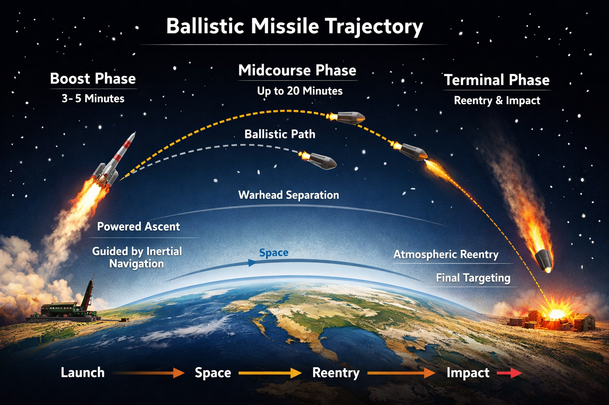
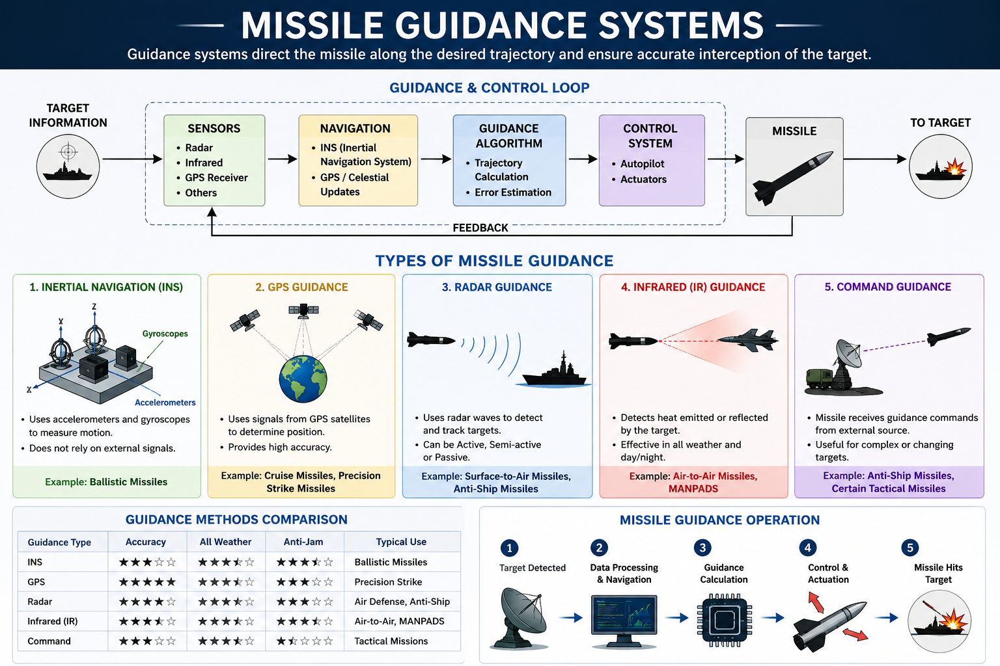

Rockets • Missiles • Satellites
Missiles are advanced guided weapons designed to deliver payloads to a target with high precision. Modern missile systems integrate propulsion, navigation, guidance and control technologies for strategic and tactical missions.
A ballistic missile follows a suborbital ballistic trajectory for most of its flight. After the powered boost phase, the missile travels through space primarily under the influence of gravity before re-entering the atmosphere toward the target.
Ballistic missiles may carry conventional or nuclear warheads and are classified based on operational range and launch platform.

Figure: Ballistic missile flight trajectory showing boost, midcourse and terminal phases.
The trajectory of a ballistic missile is divided into three primary flight phases: boost phase, midcourse phase and terminal phase.
During the boost phase, rocket engines generate thrust to accelerate the missile and increase altitude. Guidance is mainly provided using an Inertial Navigation System (INS). This is the only phase during which the missile engines remain active.
The missile travels through near-space along a ballistic path after engine shutdown. For long-range systems, warheads may separate from the missile bus and continue independently toward the target.
During atmospheric re-entry, the warhead experiences extremely high thermal and aerodynamic loads. Advanced guidance systems such as radar, infrared or GPS correction may be used for final targeting accuracy.
Modern missiles use advanced guidance and navigation systems to improve accuracy, maneuverability and target interception capability.

Figure: Overview of modern missile guidance systems and guidance-control architecture.
Missile guidance systems are responsible for directing a missile toward its intended target with high accuracy. Modern guided missile systems combine advanced sensors, navigation algorithms, onboard computers and control actuators to continuously monitor flight conditions and correct the missile’s trajectory during flight.
A complete missile guidance architecture generally consists of five major elements: sensors, navigation system, guidance computer, control system and actuators. Together, these components form a closed-loop guidance and control system capable of real-time trajectory correction and target interception.
The missile guidance process begins with target detection and tracking using various sensors such as radar, infrared seekers or satellite navigation receivers. The collected data is processed by the onboard navigation and guidance computer, which continuously calculates the required trajectory corrections.
The guidance computer sends commands to the control system, which operates aerodynamic control surfaces, thrust vector control systems or actuators to modify the missile’s flight path. Feedback from sensors is continuously used to improve targeting accuracy and maintain flight stability throughout the mission.
Inertial Navigation Systems use accelerometers and gyroscopes to determine missile position, velocity and orientation without relying on external signals. INS guidance is highly reliable and resistant to electronic jamming, making it suitable for ballistic missiles and strategic systems. However, small navigation errors accumulate over long flight durations, resulting in drift error.
Modern INS systems often use ring laser gyroscopes or fiber optic gyroscopes to improve precision and stability.
GPS-guided missiles use satellite navigation signals to improve positional accuracy during flight. GPS updates are often integrated with inertial navigation systems to reduce cumulative navigation errors and achieve highly accurate targeting capability.
Precision-guided munitions and modern cruise missiles commonly use GPS-based guidance systems for long-range strike missions.
Radar-guided missiles use electromagnetic waves to detect, track and engage targets. Radar guidance may be classified into active, semi-active and passive guidance systems depending on how target illumination is performed.
Active radar homing missiles contain onboard radar transmitters and receivers, while semi-active systems rely on external radar illumination from aircraft, ships or ground stations.
Infrared-guided missiles track the thermal radiation emitted by targets such as aircraft engines or exhaust plumes. These systems are widely used in air-to-air missiles and short-range air defense systems due to their high accuracy and passive tracking capability.
Advanced infrared seekers can distinguish targets from background thermal noise and operate effectively during terminal engagement.
In command-guided systems, trajectory corrections are transmitted from an external control station such as a radar installation, launch platform or ground operator. The missile itself does not independently determine the target position.
These systems are useful for short-range tactical engagements and situations requiring continuous external control during flight.
The operation of a guided missile generally follows five sequential stages: target detection, data processing, guidance calculation, control actuation and target interception.
Ballistic missiles are classified primarily according to operational range.